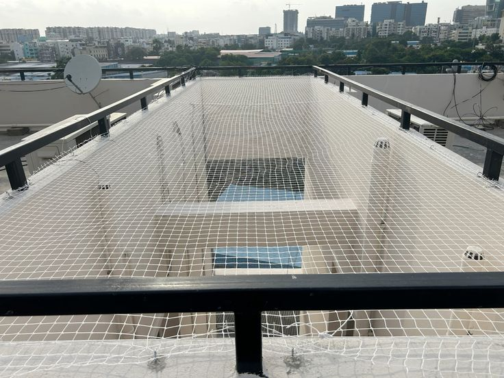
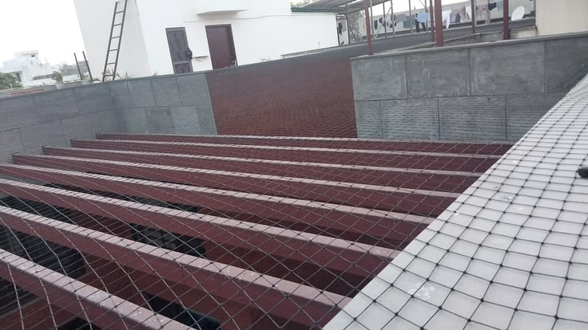
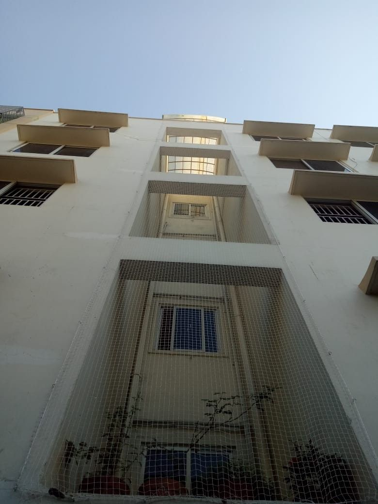
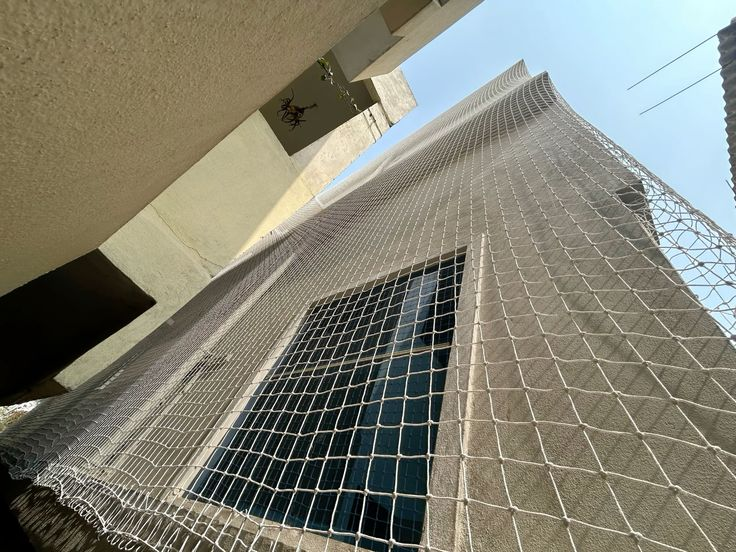

Simon Balcony Nets provides reliable Duct Area Safety Nets in Battarahalli for apartments, residential buildings, villas, high-rise buildings, and commercial properties. Our professionally installed Duct Area Safety Nets help protect open duct areas, service shafts, utility spaces, and building openings from accidental falls and unwanted entry while providing a secure safety barrier.
Our Duct Area Safety Nets in Battarahalli are available in customized sizes to suit different duct openings, service shafts, building structures, and utility areas. We use strong, weather-resistant safety net materials designed for long-term use. Simon Balcony Nets focuses on secure fitting, neat finishing, and reliable Duct Area Safety Net Installation in Battarahalli.
Whether you need protection for a residential duct area, apartment service shaft, open utility space, or high-rise building duct, Simon Balcony Nets offers practical Duct Area Protection Solutions in Battarahalli. Our Duct Area Safety Nets in Battarahalli are designed to provide dependable protection while maintaining proper ventilation and airflow around the duct area.
Simon Duct Area Nets provides professional Duct Area Safety Nets in Battarahalli, Bengaluru, offering reliable protection for open ducts, building shafts, service ducts, utility openings, and exposed areas. Our Duct Safety Net Installation in Battarahalli is suitable for apartments, villas, gated communities, commercial buildings, and residential properties. Our Duct Area Netting Solutions are designed to help reduce the entry of birds, leaves, dust, and lightweight debris into exposed duct spaces. The netting provides a practical layer of open duct protection while allowing necessary airflow and ventilation through the covered area. At Simon Duct Area Nets in Battarahalli, every Duct Net Installation is planned according to the duct size, opening dimensions, height, structure, and required coverage. Our technicians focus on proper measurements, secure fixing, and a neat finish for dependable Duct Area Protection in Battarahalli. Whether you need Duct Safety Nets near Battarahalli, Open Shaft Nets in Battarahalli, or Duct Area Netting in Bengaluru, we provide customized solutions based on the individual requirements of the property. Choose Simon Duct Area Nets for professional Duct Net Installation in Battarahalli, Bengaluru and practical protection for exposed duct areas.
Get professionally measured and fitted Duct Area Safety Nets in Battarahalli designed according to the exact size, shape, height, and structure of your duct area. Simon Duct Area Nets provides customized Duct Net Installation in Battarahalli, Bengaluru for apartments, villas, offices, and residential buildings.
Our Duct Safety Nets help protect exposed ducts, shafts, service openings, and utility areas from unwanted bird entry, leaves, and lightweight debris while maintaining air circulation and ventilation. This makes our Open Duct Protection Nets in Battarahalli a practical choice for residential and commercial properties.
Simon Duct Area Nets focuses on secure fixing and clean installation for every Duct Area Netting Project in Battarahalli. Our professional duct netting service is planned to provide suitable coverage without unnecessarily obstructing the open area.
Our Duct Area Safety Net Installation is suitable for apartments, villas, gated communities, offices, commercial properties, and multi-storey buildings. If you are looking for Duct Safety Nets near Battarahalli or Duct Netting Services in Bengaluru, Simon Duct Area Nets provides customized installation based on your property requirements.

Specialized Duct Area Netting Services in Battarahalli, Bengaluru for exposed ducts, service shafts, utility openings, and building gaps. Simon Duct Area Nets creates site-specific coverage with careful measurement, secure installation, and a clean finish suited to different duct structures.


Open duct spaces can collect unwanted debris and may allow birds to enter areas that are difficult to clean or maintain. Simon Duct Area Nets offers specially designed Duct Area Safety Net Solutions in Battarahalli to cover exposed openings while maintaining suitable ventilation and airflow.
Our Duct Netting Service in Battarahalli is suitable for building ducts, ventilation shafts, service shafts, utility openings, and other exposed vertical spaces. Each installation begins with an assessment of the available opening so the net can be properly positioned and securely fixed according to the site conditions.
Simon Duct Area Nets in Bengaluru focuses on practical protection, clean workmanship, and properly finished installations. The netting can help limit the entry of pigeons, birds, leaves, and lightweight waste into exposed duct areas, making regular maintenance easier for property owners and building managers.

Projects Completed
Customer Satisfaction
Professional Services
Support Available
Explore examples of duct protection work completed in Battarahalli, including installations for open shafts, utility ducts, ventilation spaces, and difficult-to-access building openings. Simon Duct Area Nets focuses on accurate coverage, secure net fixing, and a clean finish for every duct netting project in Bengaluru.




Simon Duct Area Nets provides customized Duct Area Safety Net Installation in Battarahalli, Bengaluru for open ducts, service shafts, utility openings, and exposed building spaces. Our installation approach starts with understanding the size, shape, access points, surrounding structure, and required coverage of the duct area before fixing the net.
Open duct spaces can become difficult areas to maintain when they collect leaves, dust, bird nesting materials, and lightweight debris. Our Duct Netting Solutions in Battarahalli are designed to provide a suitable protective barrier for such areas while allowing necessary air movement and ventilation. We provide solutions for apartment ducts, ventilation shafts, service openings, utility spaces, and other suitable exposed areas.
Every duct installation can have different fixing conditions. Pipes, walls, grills, concrete edges, equipment, and limited working space may affect how the net needs to be installed. Simon Duct Area Nets plans the Duct Safety Net Installation in Battarahalli according to the actual site conditions, with focus on proper coverage, secure fixing, and a clean finished appearance.
Whether you require Duct Area Nets near Battarahalli for a residential apartment, individual property, commercial building, or multi-storey structure, our team provides a practical Duct Area Protection Solution in Bengaluru. From measuring the required area to completing the installation, Simon Duct Area Nets focuses on suitable net selection, careful fitting, and dependable workmanship.